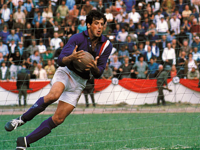

Victory (1981)

Link for information
Why this is my favorite movie
This is my favorite movie because I really love soccer and most people agree that this is the best soccer movie of all time, it features legends of the game such as Pele and Bobby Moore.
My favorite actor
My favorite actor in this movie was Sylvester Stallone because I also really like Rocky and Creed and his performance in the movie was almost as good as his roles in those movies.
Summary
The movie begins with allies in a WWII POW camp. A lot of the prisoners are former soccer players. A general in charge of the camp and one of the players agree to an exhibition mathc between the allies and the German national soccer team.